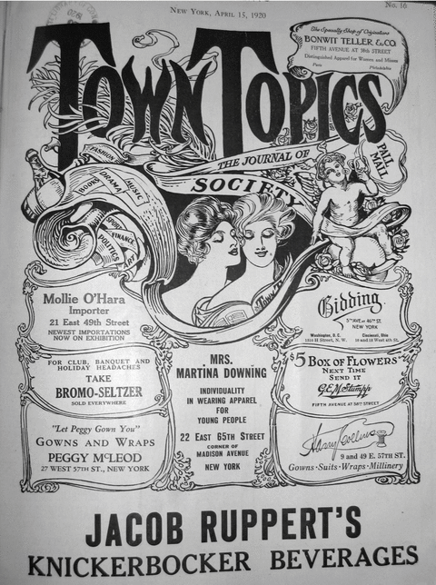
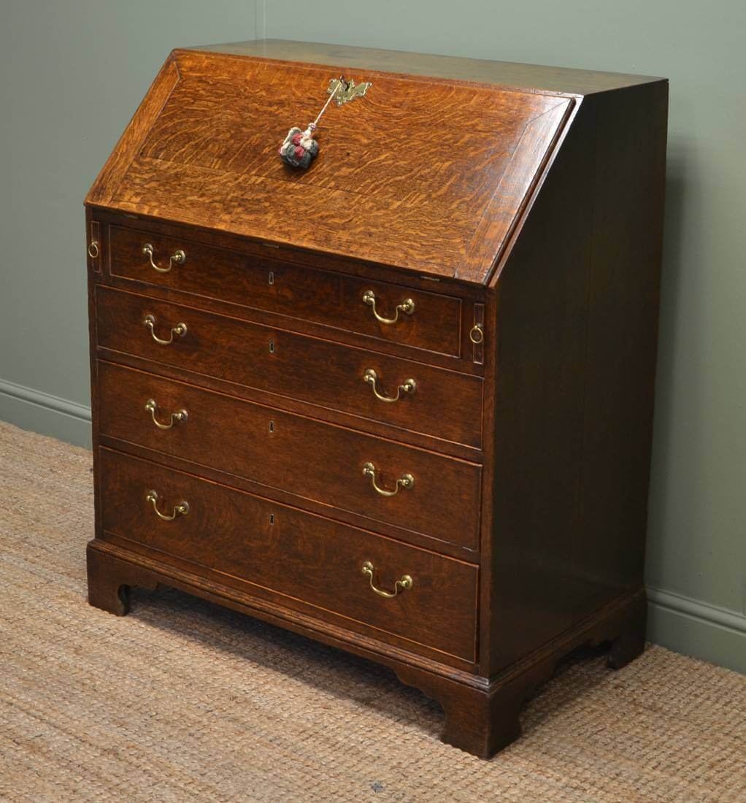

chapter2.2--handout
Background Information
Nick一走进Tom为Myrtle安置的寓所就发现了桌上放的杂志和书：Several old copies of Town Tattle lay on the table together with a copy of Simon Called Peter, and some of the small scandal magazines of Broadway.
那么作者提及这两本杂志和书有什么特别的用意呢？我们来了解一下背景：
Town Tattle
Town Tattle第一次出现是在Chapter 2.1里，Myrtle在车站的报刊亭买了一本：At the news-stand she bought a copy of Town Tattle and a moving-picture magazine... 所以这本杂志一共出现了两次。而这本叫作Town Tattle（《纽约闲话》）的杂志的原型其实是Town Topics, 这是当时极受欢迎的八卦杂志（gossip magazine）.
但作者把Topics换成了Tattle显然别有用意。Tattle表示“闲谈，闲聊”，而Topics单纯指“话题”，显得更一本正经，所以作者在这里把Topics换成更直白的Tattle也是想调侃这本杂志的内容，同时也批判了当时随着道德观念滑坡，八卦行业逐渐兴起以及名人文化开始流行（an incisive criticism of the period's loss of moral direction with the rise of the gossip industry and the beginnings of America's celebrity culture）.

Simon Called Peter
这本书出版于1921，在当时非常畅销。这本书的名字来源于《圣经》——根据约翰福音的记载，西蒙（Simon）原本是一个海边的渔夫，后来被耶稣呼召作门徒（apostle），改名为彼得（Peter）. 他是耶稣的第一个门徒，对耶稣非常衷心。但关于他还有一件很出名的轶事：在耶稣被大祭司和工会抓去后，面对关于他和耶稣是同伙的指证，彼得曾三次否认。
而这本书的内容不仅涉及宗教，还有比较淫秽的部分。它讲了一个叫做Peter Graham的牧师如何在战争时期的法国爱上了一个叫Julie的护士。而Nick对这本书的反应则是“要么书写得太糟，要么威士忌使东西变得面目全非，因为我看不出一点名堂来”（either it was terrible stuff or the whiskey distorted things, because it didn’t make any sense to me）.
Bureau
bureau是英式英语的表示方法，在美式英语里一般说chest of drawers, 也就是“五斗橱，书桌”。
它可以指附有抽屉及活动写字台的书桌（a desk with drawers and usually a top that opens down to make a table to write on）, 比如下面这样的↓
或者是放在卧室里用来摆衣服（诸如袜子之类的），也可以放在家里的任何地方用来收纳东西。像这样↓

Vocabulary
commence
💧vt.& vi. 开始；着手（to begin or to start something）
💧原文：...company commenced to arrive at the apartment-door.
客人们开始来敲公寓的门了。
💧commence比start和begin更为正式，一般用在书面语中。常用搭配有两个：
commence with “以……开始”
例句：The day commenced with a welcome from the principal.
那天由校长致欢迎词开始。
commence doing “开始做”
例句：The planes commenced bombing at midnight.
飞机在半夜里开始轰炸。
💧另外commencement day是指领学位证书的那一天，也就是毕业典礼的日子啦~
incessant
💧adj. 不停的，持续不断的（continuing without stopping）
💧原文：When she moved about there was an incessant clicking as innumerable pottery bracelets jingled up and down upon her arms.
她走动的时候，不断发出丁当丁当的声音，因为许多假玉手镯在她胳臂上面上上下下地抖动。
💧incessant和cease其实来源于同一个拉丁词根（cessare）. 我们知道cease表示stop的意思，而-in是否定前缀，所以incessant就表示never stops, 也就是constant（持续不断的）。但incessant一般含有贬义，比如：
The child’s incessant talking started to irritate her.
这孩子喋喋不休，她开始烦躁起来。
Crush Your Problems
- We drove over to Fifth Avenue, / so warm and soft, almost pastoral, on the summer Sunday afternoon / that I wouldn’t have been surprised to see a great flock of white sheep turn the corner.
我们坐着车子来到五号路，在这夏天星期日的下午，空气又温暖又柔和，几乎有田园风味。即使看见一大群雪白的绵羊突然从街角拐出来，我也不会感到惊奇。
💧句式拆解
这个句子比较长，里面包含了一个so...that...从句（如此…以致于…）。
💧表达精讲
①wouldn't have been “（即便/就算…），也不会…”，是虚拟语气，表示过去未发生的事情。比如：He wouldn't have been saved even if he had been sent to hospital at once. 即使立即送他去医院，也不能挽救他的生命。
表示过去的虚拟：
主句：主语+should/would/might/could+have done
从句：If+主语+had+done
②a flock of=flocks of 表示“成群结队；一大群”，比如：These cases all attracted flocks of famous writers. 这些案件都吸引了大批知名作家的关注。
③turn the corner 表示“在街角拐弯”，比如：The wind hit him as he turned the corner. 他在街角一拐弯，狂风就向他袭来。 - At 158th Street / the cab stopped at one slice / in a long white cake of apartment-houses.
出租汽车在一五八号街一大排白色蛋糕似的公寓中的一幢前面停下。
💧知识拓展
这个句子包含了一个隐喻：apartment-house指隔成公寓的建筑物（apartment是公寓，house是独幢的房子），在这里比喻为a long white cake. slice指“（切下来的）一份”，这里的one slice就是其中的一幢啦~
注意这里表示隐喻的说法（of前面是喻体，后面是本体）：a long white cake of apartment-houses
文中还有一处：He passed his hand over the brown wash-rag of a back.（他的手抚过小狗棕色毛巾似的脊背。） - The living-room was crowded to the doors / with a set of tapestried furniture / entirely too large for it, / so that to move about / was to stumble continually over / scenes of ladies swinging in the gardens of Versailles.
起居室给一套大得很不相称的织锦家具挤得满满当当的，以至于要在室内走动就是不断地绊倒在法国仕女在凡尔赛宫的花园里打秋千的画面上。
💧表达精讲
①be crowded with 表示“挤满”，to the doors 表示“家具已经挤到门边上了”；
②tapestry 指“挂毯；织锦”，tapestried furniture 也就是“铺了织锦的家具”；
③too large for it, it指living-room, “家具对于起居室来说太大了”；
④to move about was to stumble continually over... “四周走动就是意味着不断绊倒在…”；move about “四周走动”；stumble over “在……上绊了一下，绊倒”；
⑤scenes of ladies swinging in the gardens of Versailles, scene表示“风景，图画”；swinging in the gardens of Versailles是现在分词结构作后置定语修饰ladies. - Looked at from a distance, / however, / the hen resolved itself into a bonnet, / and the countenance of / a stout old lady beamed down into the room.
可是，从远处看去，母鸡化为一顶女帽，变成一位胖老太太笑眯眯地俯视着屋子的样子。
💧句式拆解
这句话的主语是the hen, looked at from a distance是过去分词前置作状语，这里表示条件，可以改写成：If it was looked at from a distance, however, the hen...
💧表达精讲
①resolve (oneself) into 表示“演变成某事物”（to gradually change into something else）. 比如：The argument resolved itself into an uneasy truce.
争论进入暂时的休战状态。
②countenance 表示“面孔，面部表情”，相比face文学性更强；the countenance of 就是“…的样子”；
③beam 作动词表示“眉开眼笑”（beam作名词有“光束”和“喜色，笑容”的意思），down 表示“俯视”，into 表示“朝，向”。 - A reluctant elevator-boy went for a box / full of straw and some milk, / to which he added / on his own initiative / a tin of large, hard dog-biscuits — / one of which decomposed apathetically / in the saucer of milk / all afternoon.
一个很不情愿的门童弄来了一只垫满稻草的盒子和一些牛奶，另外他又主动给买了一听又大又硬的狗饼干，有一块饼干一下午泡在一碟牛奶里，泡得稀巴烂。
💧句式拆解
①to which he added...a tin of large, hard dog-biscuits 作非限制性定语从句修饰a box, 还原成正常语序是：he added a tin of large, hard dog-biscuits to the box.
②one of which... 同样也是非限制性定语从句修饰dog-biscuits.
💧表达精讲
①go for “去拿，弄来”（to go and get）；
②on one's own initiative “主动地，自作主张地”；关于initiative还有一个常见的表达：take the initiative “采取主动”，比如：Why don’t you take the initiative and ask him out?
为什么你不主动约他出去呢？
③decompose “分解，使变腐烂”，这里 decomposed in the saucer of milk 表示“在牛奶碟里都要泡化了”。
Content Analysis
💧Clue 1: Mrs. Wilson (Myrtle) is more concerned about money and power.
Nick跟随Tom和Mrs. Wilson一起来到他们在纽约的寓所，远离灰谷后，Mrs. Wilson也逐渐显露出她的另外一面。比如刚一到公寓的她就换上了一套精致华丽的衣服——
Evidence 1: Mrs. Wilson had changed her costume some time before, and was now attired in an elaborate afternoon dress of cream-colored chiffon, which gave out a continual rustle as she swept about the room.
威尔逊太太不知什么时候又换了一套衣服，现在穿的是一件精致的奶油色雪纺绸的连衣裙，是下午做客穿的那种，她在屋子里转来转去的时候，衣裙就不断地沙沙作响。
衣服往往是一个人身份和地位的象征，所以Mrs. Wilson迫不及待地换下身上的衣服其实也表明了她对自己原本身份地位的厌恶。她有着强烈的想要融入属于Tom的上层阶级的野心。而她邀请自己的妹妹和邻居朋友来做客也不仅仅出于热情（任何一个人作为别人的情妇，都不会如此招摇过市并且毫不介意公之于众吧？）——所以她更是为了炫耀自己所拥有的这一切优势。
Evidence 2:With the influence of the dress her personality had also undergone a change. The intense vitality that had been so remarkable in the garage was converted into impressive hauteur.
由于衣服的影响，她的个性也跟着起了变化。早先在车行里那么显著的活力变成了目空一切的hauteur.（hauteur是法语的“傲慢”）
越是对自己的身份充满焦虑，越是要依靠外在的打扮来掩饰不安，甚至伪装出一副新的面孔，Mrs. Wilson就是最好的例子。比如早先她所展示出的那种“显著的活力”（intense vitality），原本是一种正面积极的品格（clearly a positive and refreshing attribute），转而变成了一种不可一世的傲慢（impressive hauteur）. 并且这个变化是来到曼哈顿后发生的，可见当时纽约这个大都会对人性有着多可怕的扭曲能力。
💧Clue 2: The McKees try hard to be accpeted by the upper class but are shallow and dull in reality.
Myrtle邀请的一对邻居夫妇——the McKees也是非常有意思的人物。他们很明显地在努力融入上等阶级，但却又处处显得可笑与无趣。比如一个小细节——
Evidence 1: Mr. McKee was a pale, feminine man from the flat below. He had just shaved, for there was a white spot of lather on his cheekbone, and he was most respectful in his greeting to every one in the room.
麦基先生是住在楼下一层的一个白净的、女人气的男人。他刚刮过胡子，因为他颧骨上还有一点白肥皂沫。他和屋里每一个人打招呼时都毕恭毕敬。
“对每个人打招呼都毕恭毕敬”（注意原文的说法是most respectful），可以感觉出Mr. Mckee为了表现自己的礼貌涵养，到了甚至有过分殷勤的嫌疑（这里的每个人包括了Nick和Mrs. Mrytle, 但他们其实都不属于Tom所在的上层阶级）。但唯一一个细节，就描绘出了他的窘态：他刮完胡子后还留了一点泡沫没擦干净（a white spot of lather on his cheekbone）. 这件小事一直萦绕在Nick心头，让他感觉非常不舒服（其实真正让他不舒服的是看到Mr. Mckee这样的小人物既可笑又可怜）。
除此之外，Mckee在谈到自己的职业时的故作严肃正经也非常拙劣。他是一个摄影师（photographor）, 但偏要说自己是in the “artistic game”，让人不明就里——
Evidence 2: He informed me that he was in the “artistic game,” and I gathered later that he was a photographer...
他告诉我他是"吃艺术饭"的，后来我才明白他是摄影师…
他也总是说出一些不合时宜的话，有意无意地卖弄自己的专业。比如在Mrs. Mckee吹嘘说如果能让自己的丈夫把Mrs. Wilson的姿态拍下来，一定会是一副杰作。（“If Chester could only get you in that pose I think he could make something of it.”）Mr. Mckee便说道——
Evidence 3: “I should change the light,” he said after a moment. “I’d like to bring out the modelling of the features. And I’d try to get hold of all the back hair.”
"我得改换光线，"他过了一会儿说道，"我很想把面貌的立体感表现出来。我还要把后面的头发全部拍进来。"
McKees夫妇和Mrs.Wilson在某种层面上其实是相似的，虽然前者更多表现出来的是蹑手蹑脚的滑稽可笑，而后者则是张扬跋扈的贪慕虚荣。但在Nick的眼里，这些人不过都是在名利的哈哈镜前的一幅幅被扭曲的面孔。
Today's Bonus
💧Hairstyle in the 1920s—To Bob or Not to Bob
Mrs. Wilson的妹妹Catherine一登场，就透露出了一种十分蹩脚的时髦气，Nick是这么形容的：The sister, Catherine, was a slender, worldly girl of about thirty, with a solid, sticky bob of red hair, and a complexion powdered milky white.
她妹妹凯瑟琳是一个苗条而俗气的女人，年纪三十上下，一头浓密的短短的红头发，脸上粉搽得像牛奶一样白。
Bob（波波头）在20年代后期的美国是一种非常时髦的发型，但其实在流行起来前，它一直饱受争议。因为长久以来的观念是，长发才能展现女性气质并且体现出女性阴柔的一面（Long hair was considered feminine and short hair was not）. 所以当Bob从法国进入美国后，舆论都一致地倒向——“留着Bob头的女人就是失宠的女人”。
最强烈的反对声来自于教堂里的牧师，还有不喜欢妻子留短发的丈夫们。但是崇尚自由以及独立的女性们并不会放弃她们对美的追求，到后来慢慢地，Bob也就成为了不可逆转的潮流。我们可以看看当时的Bob头都有哪些样式——
1. Faux Bob
faux是“伪的，假的”的意思，所以Faux Bob就是舍不得剪掉长发的姑娘们把头发藏起来，用来仿Bob的发型。
这个发型在现在也很流行哦~但是一般会微烫一下，看起来更显青春活力，比如霉霉早期——
2. Coconut Bob
顾名思义，Coconut Bob就是“椰子头”啦~这种发型比较短，头发一般刚好盖过耳垂，而且下摆平齐（with a solid straight fringe and no parting）.
3. Pageboy Bob
侍童头可以算是也椰子头的加长版啦~ 特点就是刘海齐眉，发梢内卷。
4. Water or Marcel Waved Bob
这种波形卷发因为形似波浪而得名↓
当然这个发型比较复古，对应的现代款就是Wavy Bob，比如留了Wavy Bob秒变洋气的 Jennifer Lawrence↓
5. Box Bob
Box Bob也就是童花头，看上去像个方圆形的盒子，很俏皮喜感~
6. Lob
Lob并不属于20年代，但也算是从Bob发展而来的一种流行发型。Lob是稍长一点的Bob头（long+bob→lob），发尾一般在下巴和肩膀之间。这个发型能够长盛不衰一直保持流行也是因为它对各种脸型以及发质都十分友好（flattering for a variety of different face shapes, hair textures and complexions）. 比如Elsa Pataky的这款↓
看了这么多种Bob发型，你有没有心动呢~